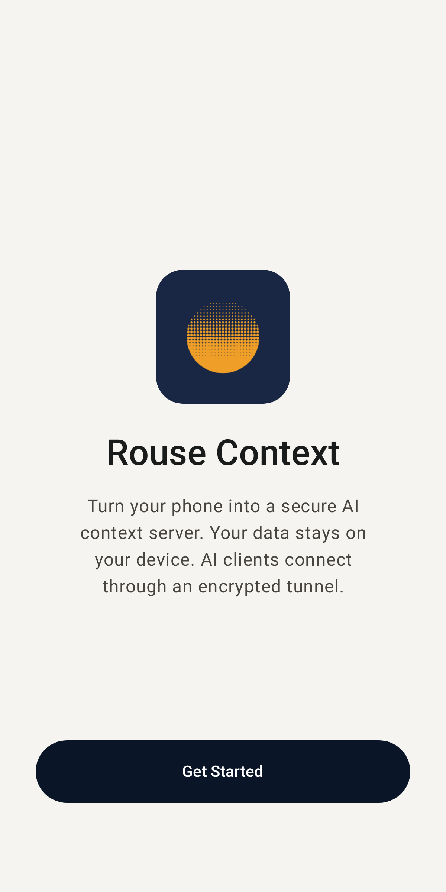
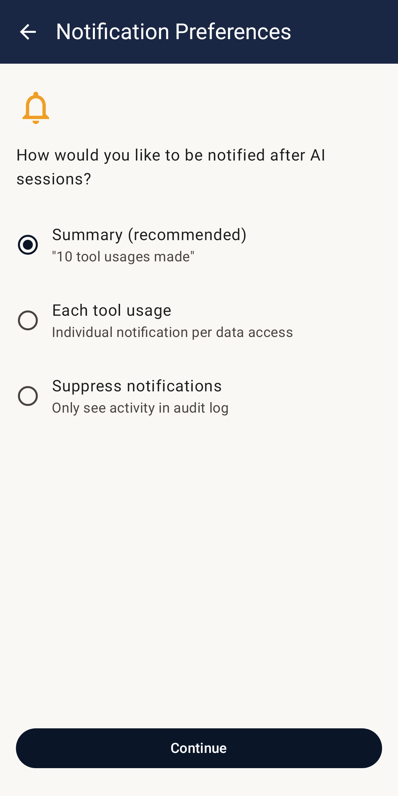
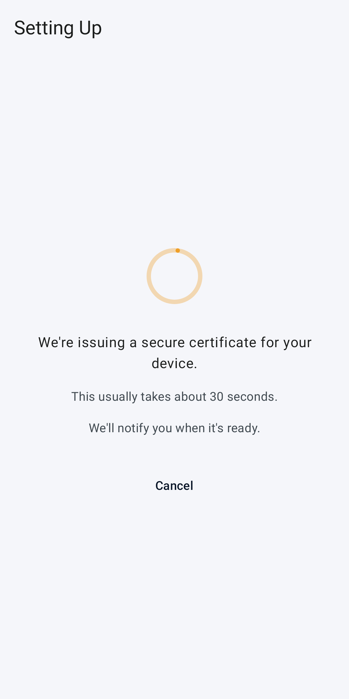
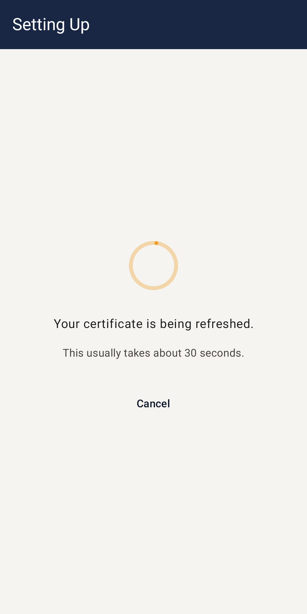
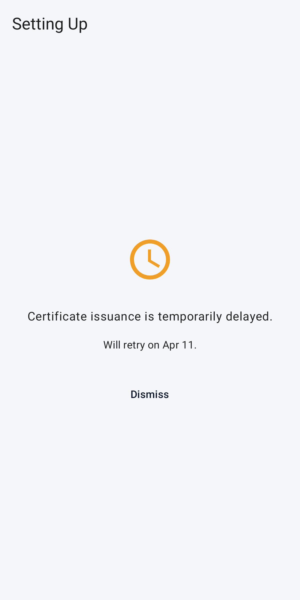
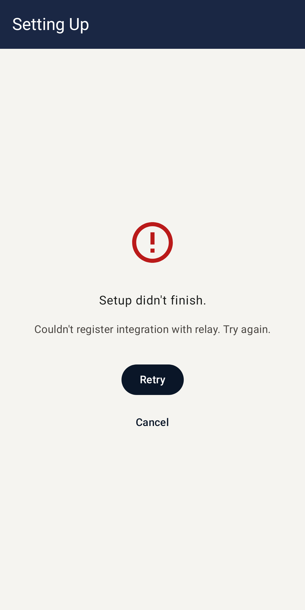
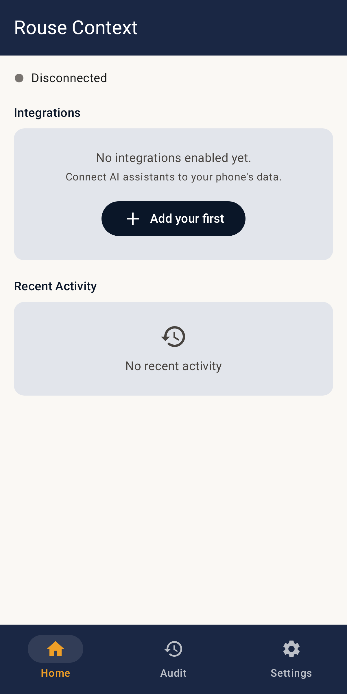
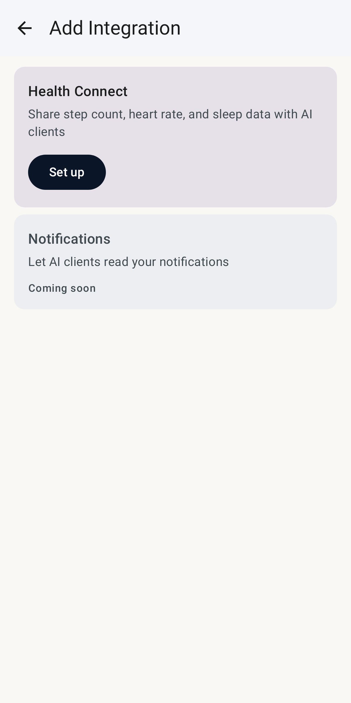
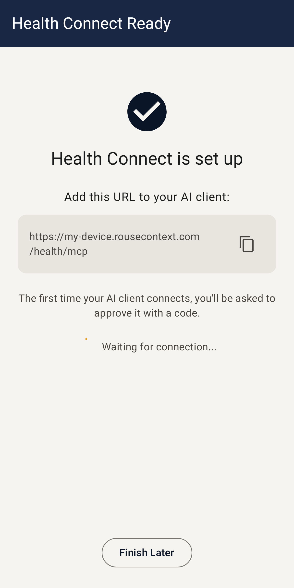
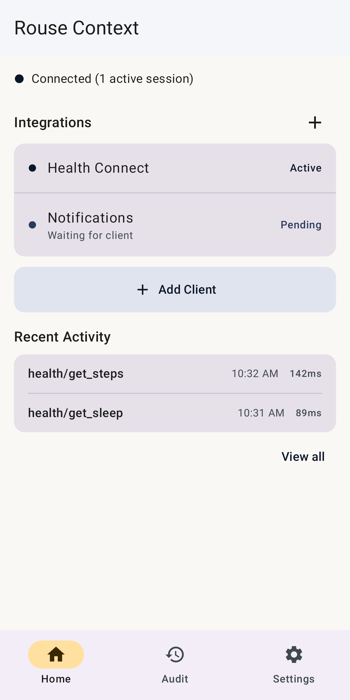

Onboarding & first integration
Fresh install → Home with at least one integration enabled.

Welcome
First screen on fresh install. No state exists yet.
tap "Get Started"

Notification Preferences
User picks how tool-call notifications appear.
tap "Continue" → system POST_NOTIFICATIONS dialog (Android 13+) → grant
Design decision (#389): Relay registration + cert provisioning fire here, before Home loads. The user has not yet picked an integration. See
docs/ux-decisions.md for the trade-offs and why this was chosen over deferring to first integration add.

Setting up — Registering
Relay registration in flight. Subdomain + integration secrets persisted here.
registration succeeds

Setting up — Provisioning certs
ACME hop. Server cert, client (mTLS) cert, relay CA all persisted.

Rate limited
ACME or relay quota exhausted. User sees retry date.

Failed
Network or server error. "Try again" button re-runs the failed hop.
cert provisioning succeeds → Onboarded state

Home — empty state
Device is fully provisioned but no integrations enabled yet.
tap "Add your first" integrations row

Add Integration
List of available integrations (Health Connect, Notifications, Outreach, Test Tools, Usage Stats).
tap one

Integration detail — ready
Integration URL shown. "Waiting for AI client…" until one connects.
tap "Finish Later" (or add AI client now)

Home — integrations enabled
Fully configured. Integration card shows active state.